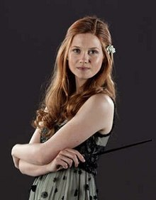
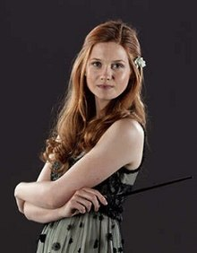

Hermione Granger is an amazing girl and the brightest witch of her age. Here are some facts you may or may not know about her!
FULL NAME Hermione Jean Granger, BIRTHDAY 19 September 1979, WAND Dragon heartstring core, ten and three-quarter inches, vine wood, HOUSE Gryffindor, PATRONUS Otter, PARENTS Mr and Mrs Granger, both Muggles, both dentists, SKILLS Almost everything, HOBBIES Reading, campaigning for House-Elves' rights.
 

Ginny Weasley is the youngest Weasley but still the most amazing!
Full name: Ginerva 'Ginny' Molly Weasley, Birthday: 11 August 1981 House: Gryffindor, Patronous: Horse, Parents: Molly Weasley (née Prewett) and Arthur Weasley, Skills: Skilled Chaser, Bat-Bogey hex.